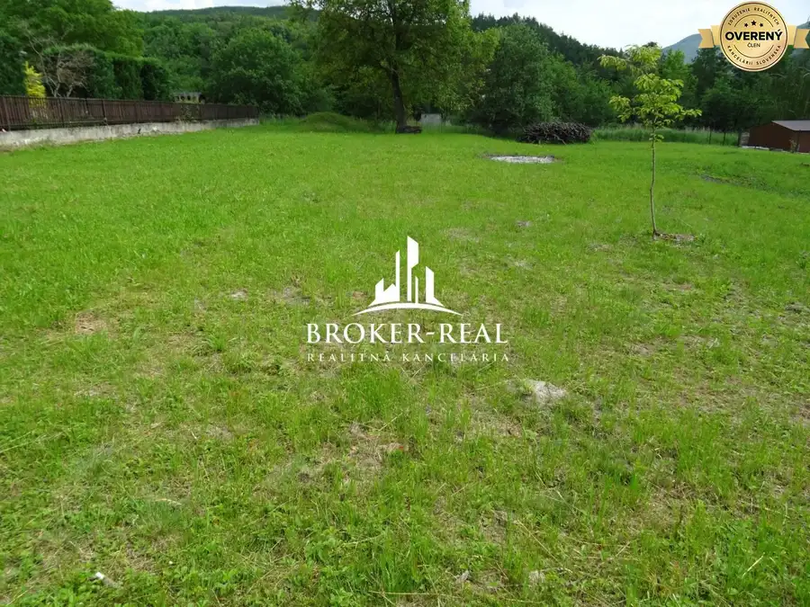
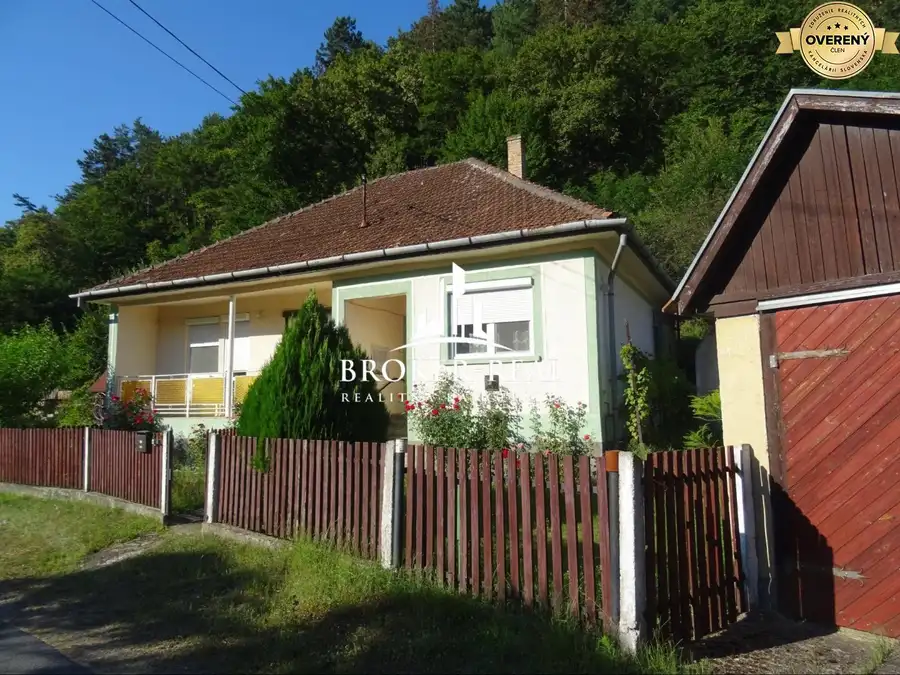
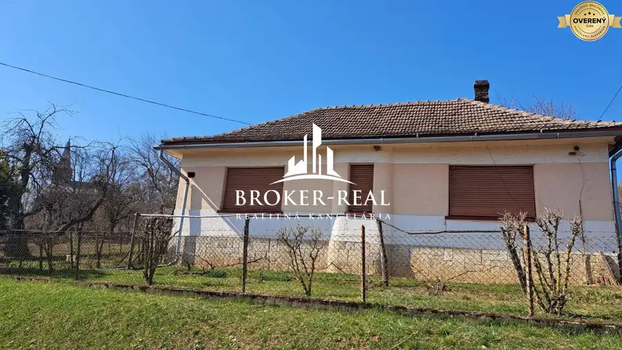
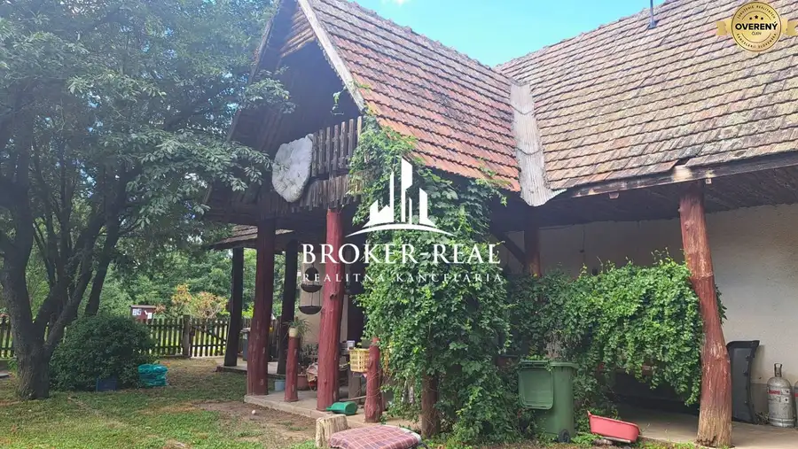
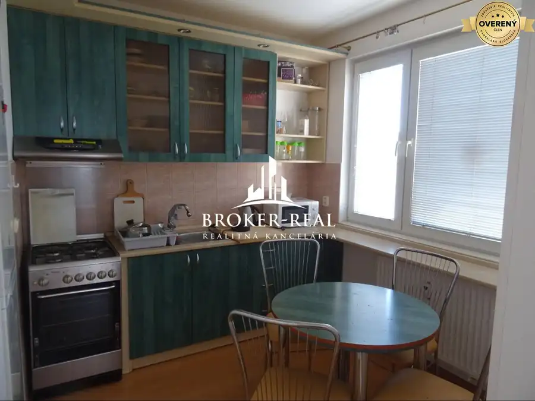
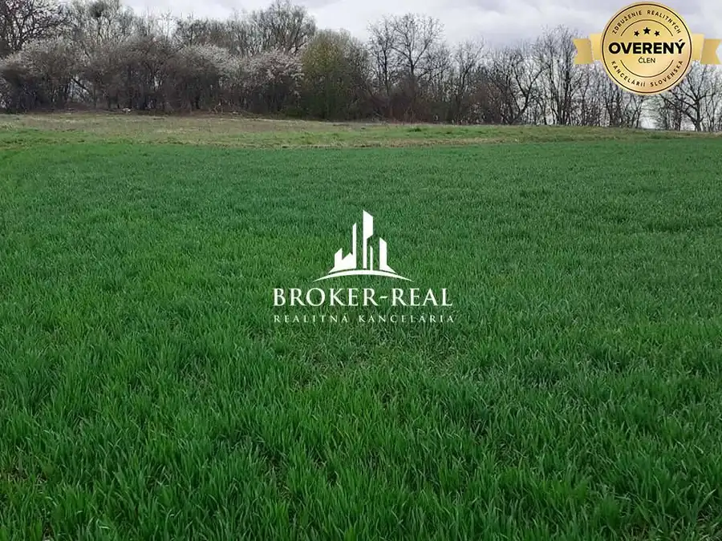

Aktuálna ponuka
Nehnuteľnosti, ktoré ponúkam
8 nehnuteľností na predaj a prenájom. Vyberte typ, alebo napíšte lokalitu.
8 z 8 ponúk

Pozemok 48 000 €Stavebný pozemok Pányok, Maďarsko Gönc, Pányok 560 m² Stavebný pozemok v obci Pányok vhodný na stavbu rodinného domu o celkovej výmere 560 m2. Na pozemku sa nachádza prípojka elektriny, plynu, obecnej… Pozemok
73 000 €Stavebný pozemok Pányok, Maďarsko
Gönc, Pányok
850 m²
Stavebný pozemok v obci Pányok vhodný na stavbu rodinného domu o celkovej výmere 850 m2. Na pozemku sa nachádza prípojka elektriny, plynu, obecnej…
Pozemok
73 000 €Stavebný pozemok Pányok, Maďarsko
Gönc, Pányok
850 m²
Stavebný pozemok v obci Pányok vhodný na stavbu rodinného domu o celkovej výmere 850 m2. Na pozemku sa nachádza prípojka elektriny, plynu, obecnej…

Rodinné domy10 85 500 €3 - izbový Rodinný dom - Telkibánya, Maďarsko Telkibánya, Telkibanya 3-izbový120 m² Na predaj 3 izbový Rodinný dom v obci Telkibánya, Maďarsko. Hlavnú stavbu tvorí 1 podlažný rodinný dom postavený v roku 1985. Ďalšou stavbou na…
Rodinné domy10 29 500 €Rodinný dom Hernádpetri -Maďarsko Hernádpetri, Hernadpetri 3-izbový80 m² Na predaj 3 izbový Rodinný dom v obci Hernádpetri - Maďarsko. Hlavnú stavbu tvorí 1 podlažný 3 izbový rodinný dom, typ kombinovaný vidiecky v tvare…
Chaty a chalupy9 49 500 €Rodinný dom -chalupa, Aranyos Abaújkér 2-izbový60 m² Na predaj 2 izbový Rodinný dom v obci Abaujker Aranyos - Maďarsko. Hlavnú stavbu tvorí 1 podlažná 2 izbová chalupa s obytným podkrovím. Typ vidiecky…
Byt5 154 000 €1 - izbový byt Košice -Varšavská Ťahanovce, Sídlisko Ťahanovce 1-izbový42 m²6. podlažie 1- izbový byt v mestkej časti Košice - Sídlisko Ťahanovce, Varšavská. Byt s úžitkovou plochou 42 m2 sa nachádza na 6. poschodí s výťahom. K bytu…
Pozemok 95 000 €Stavebný pozemok Tornyosnémeti, Maďarsko Gönc, Tornyosnémeti 2200 m² Na predaj pozemok vhodný na stavbu rodinného domu o výmere 2200 m2 v obci Tornyosnémeti. Zastavanosť pozemku je 30 %. Inžinierske siete: zemný plyn,… Pozemok
48 000 €Stavebný pozemok Tornyosnémeti, Maďarsko
Gönc, Tornyosnémeti
1000 m²
Na predaj pozemok vhodný na stavbu rodinného domu o výmere 1000 m2 v obci Tornyosnémeti. Zastavanosť pozemku je 30 %. Inžinierske siete: zemný plyn,…
Pozemok
48 000 €Stavebný pozemok Tornyosnémeti, Maďarsko
Gönc, Tornyosnémeti
1000 m²
Na predaj pozemok vhodný na stavbu rodinného domu o výmere 1000 m2 v obci Tornyosnémeti. Zastavanosť pozemku je 30 %. Inžinierske siete: zemný plyn,…
Tomuto výberu zatiaľ nezodpovedá žiadna ponuka. Napíšte mi, čo hľadáte.